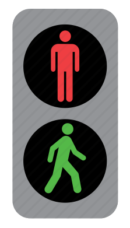

I was waiting at a traffic light to cross the road with Haruki, a Japanese friend. It was a lazy Sunday afternoon in a small town on the Tokyo outskirts and there was not a vehicle or soul in sight. So I turned to Haruki and said, "Hey, I know it's a red man but should we just cross?"
Haruki looked at me and shook his head. "No, we wait for the green man."
I was a bit perplexed - it did not seem to me that it would make any difference whether we waited or not. "There aren't any cars. Why do we need to wait?"
Haruki smiled, then asked me a question in return: "What if a child is watching?"
"Our character is what we do when we think no one is looking." - H. Jackson Brown Jr.